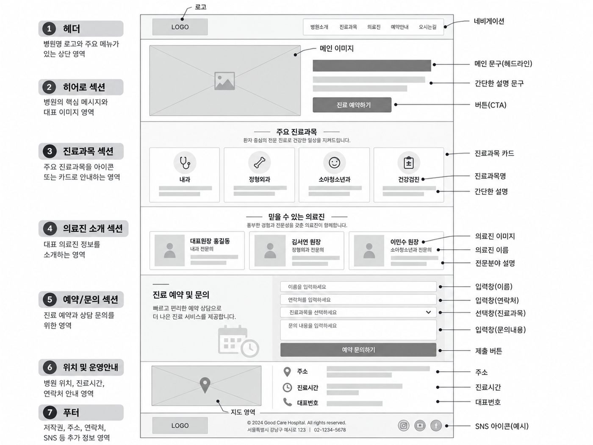
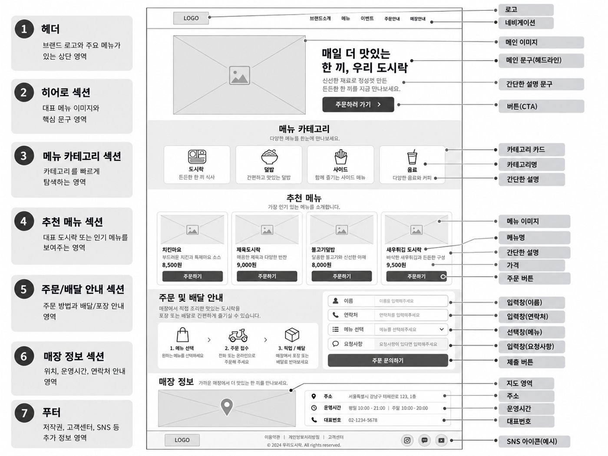
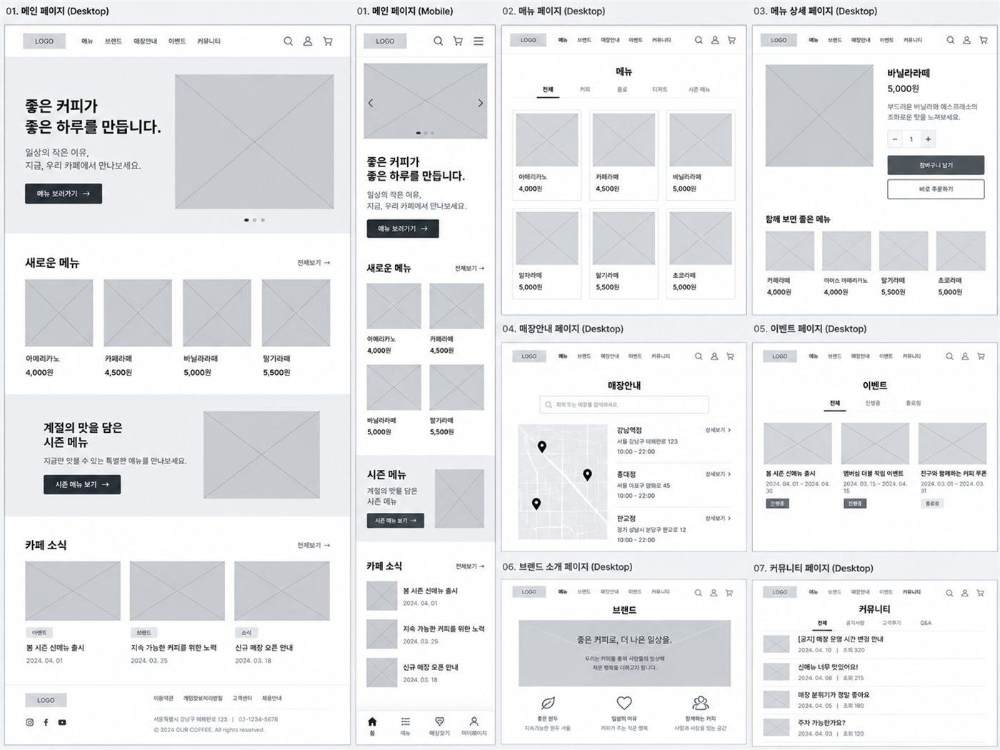
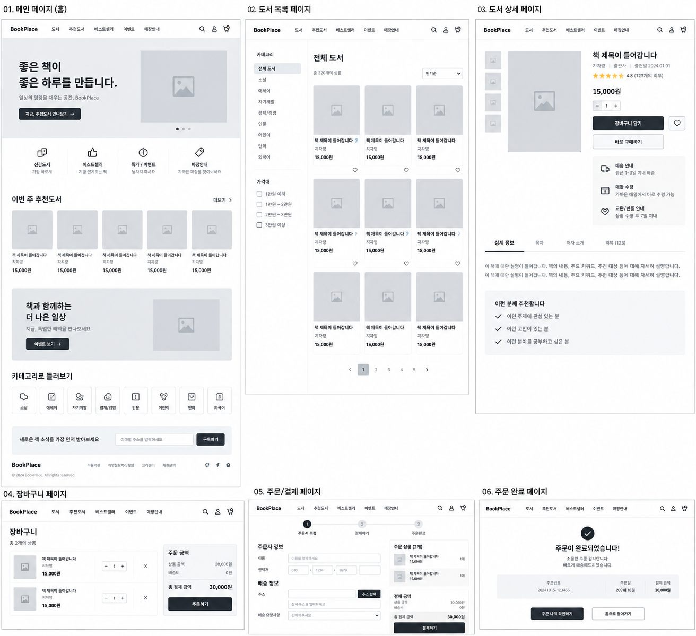

DAY 05바이브코딩 · 최종 프로젝트 기획
최종 프로젝트 기획
오늘부터는 각자 다른 개인 프로젝트를 만듭니다. 예쁜 웹사이트를 만드는 날이 아니라, 무엇을 만들지 결정하고 사용자가 이동하는 흐름(User Flow)과 화면 설계도(Wireframe)까지 만들어서 실제 제작이 가능한 구조를 완성하는 날입니다.
1.수업 구성
지금까지 웹페이지를 만들고 Database에 데이터를 저장해 본 경험을 바탕으로, 나만의 프로젝트를 계획하는 단계
개인 프로젝트 기획 + AI를 활용한 검토·구체화 + Wireframe 제작
최종 프로젝트의 목적과 핵심기능을 결정하고 User Flow(흐름)와 Wireframe(화면 설계도)까지 만들어 실제 제작이 가능한 프로젝트 구조 만들기
DAY 05에서 완성한 기획을 바탕으로 DAY 06 초반에 제작 설명서를 정리한 뒤 실제로 만들기 시작하기
2.오늘 수업의 핵심 방식
오늘 집중할 내용
오늘의 목표는 "예쁜 웹사이트를 만드는 것"이 아닙니다
핵심 — 만들기 전에 프로젝트의 방향과 구조를 먼저 정하기
아이디어 → 목적과 사용자 → MVP → User Flow(흐름) → Wireframe(화면 설계도)
Wireframe 최종 점검 → 필요한 글·사진 정리 → 제작 설명서(BUILD_SPEC.md) 작성 → 본격 제작 시작
DAY 05의 기획과 DAY 06의 제작을 별개의 수업으로 끊지 않고 하나의 개인 프로젝트로 연결합니다.
3.최종 프로젝트 범위 정하기
DAY 06~07을 이용해 실제 웹사이트를 제작하므로, 너무 큰 서비스는 기획하지 않습니다.
회원가입, 로그인, 장바구니, 결제, 배송, 리뷰, 쿠폰, 관리자 페이지
브랜드 소개, 상품 목록, 상품정보 확인, 문의 작성, 문의 내용을 Database에 저장
MVP (최소 기능 제품)
꼭 필요한 기능만 넣어서 먼저 완성하는 첫 번째 버전입니다. 나머지 기능은 완성한 뒤 시간이 남으면 더합니다.
카페 소개, 메뉴 확인, 위치 확인, 문의 작성
메뉴 검색, 사진이 넘어가는 효과, 화려한 움직임, 좋아요 기능
처음부터 모든 기능을 만들지 않고, 필요한 기능을 먼저 완성한 뒤 시간이 남으면 기능을 추가합니다.
4.최종 프로젝트 예시 & 기획파일 만들기
아래 예시 중에서 골라도 되고, 자유롭게 정해도 됩니다.
프로젝트 기획파일 만들기
프로젝트 폴더 안에 PROJECT_PLAN.md 파일(기획 메모장)을 만들고, 오늘 정한 기획 내용을 계속 적어 둡니다.
5.STEP 01. 프로젝트 방향 결정하기
처음부터 AI에게 "프로젝트 하나 만들어줘"라고 맡기지 않습니다. 먼저 직접 관심분야, 만들고 싶은 사이트, 주요 사용자, 사용자가 했으면 하는 행동을 생각해서 적어봅니다.
6.STEP 02. MVP 결정하기
먼저 직접 꼭 필요한 기능과 시간이 남으면 넣고 싶은 기능(있으면 좋은 기능)을 나눠 보세요.
브랜드 소개, 자기소개, 내용이 바뀌지 않는 사진 모음, 위치정보, 서비스 설명
문의내용 저장, 메뉴목록 관리, 게시글 저장, 신청내용 저장, 상품정보 관리
배웠다고 무조건 Supabase를 사용하는 것이 아니라 필요한 경우에만 사용합니다.
7.STEP 03. 흐름 정하기 — 사용자는 어떻게 이동할까?
User Flow (사용자 흐름)
사용자가 사이트에 들어와 원하는 일을 끝낼 때까지 어떤 화면을 어떤 순서로 거치는지 화살표로 적은 것입니다. 현업에서는 이것을 User Flow라고 부릅니다.
화살표 사이마다 무엇을 눌러서 넘어가는지도 함께 적어 두면, 다음 단계에서 어떤 버튼이 필요한지 바로 알 수 있습니다.
메인 화면 → [메뉴 보기] → 메뉴 → [위치 보기] → 위치 안내 → 방문
메인 화면 → [클래스 보기] → 클래스 목록 → 상세 내용 → [신청하기] → 신청 입력창 → 신청 완료
한 페이지짜리 사이트라도 괜찮습니다. 이때는 "화면" 대신 한 페이지 안의 구역(Section)으로 적으면 됩니다. 예: 첫 화면 → [메뉴 보기] → 메뉴 구역 → [위치 보기] → 위치 구역
내 프로젝트의 흐름 직접 적어보기
AI에게 바로 맡기지 말고, 먼저 시작 화면 → [누르는 것] → 다음 화면 → … → 최종 목표 순서로 직접 적어 보세요. 완벽하지 않아도 됩니다. 적은 내용을 AI에게 검토받습니다.
버튼은 장식이 아니라 다음 화면으로 넘어가는 길입니다. "위치를 확인해야 함"이 먼저 있고, 그래서 [위치 보기] 버튼이 필요한 것입니다.
8.STEP 04. 화면 구성 정하기 · Wireframe이란?
STEP 04. 각 화면에 무엇을 넣을지 정하기
Wireframe (화면 설계도)
색과 사진으로 꾸미기 전에, 글·사진·버튼이 화면의 어디에 들어갈지 정하는 간단한 설계도입니다.
색, 예쁜 사진, 화려한 글꼴, 움직임 효과
제목·이미지·버튼·메뉴의 위치, 내용의 순서, 카드 배치, 입력창
Wireframe 예시 — 한 페이지를 Section과 요소로 나누기
색과 사진 없이 회색 상자와 선만으로 무엇이 어디에, 어떤 순서로 들어가는지 정한 예시입니다. 왼쪽 번호는 Section, 오른쪽 이름표는 각 요소의 이름입니다. 이미지를 누르면 크게 볼 수 있어요.


크게 보기

크게 보기9.STEP 05~06. Wireframe 초안 · 실제 제작하기
만들어볼 결과물 예시 — 흐름에 있는 화면마다 Wireframe 그리기
STEP 03에서 정한 흐름의 화면 하나하나에 Wireframe을 그리면 아래처럼 사이트 전체의 설계도가 됩니다. 오늘은 이 정도로 정교하지 않아도 괜찮습니다. 아래 STEP 05~06처럼 AI와 함께 필요한 화면부터 만들어 봅니다.


크게 보기

크게 보기먼저 AI에게 구조 제안 받기
실제 Wireframe 만들어보기
설계한 내용을 브라우저에서 확인할 수 있는 형태로 제작합니다. 단, 최종 웹사이트 제작은 아닙니다.
10.STEP 07. Wireframe 수정하기
직접 문제를 하나 이상 찾아보세요 — 예: 첫 화면이 너무 커서 중요한 내용이 늦게 보임, 문의 버튼이 페이지 맨 아래에만 있어 찾기 어려움, 메뉴 카드가 너무 많음.
예시 — "지금 첫 화면이 너무 커서 중요한 내용을 보려면 한참 내려가야 해. 첫 화면의 높이를 줄여서 다음 Section이 더 빨리 보이게 고쳐줘. 다른 부분은 그대로 둬."
11.흐름 → 화면 설계도, 두 단계로 정리하기
오늘 설계는 딱 두 단계입니다. 이 두 가지만 있으면 Claude Code에게 무엇을 만들지 정확히 알려줄 수 있습니다.
하나의 예시로 연결하기 — 카페 사이트
핵심 — 흐름을 먼저 정하고, 그 화면마다 무엇을 넣을지 정하기
12.최종 체크리스트
□ 주요 사용자가 정해져 있는가?
□ 꼭 필요한 기능이 4개 이하인가?
□ 있으면 좋은 기능과 구분했는가?
□ 필요한 경우 어떤 데이터를 저장할지 아는가?
□ 필요한 화면(또는 구역)이 정해져 있는가?
□ 버튼을 눌렀을 때 어디로 가는지 아는가?
□ 내용의 순서가 자연스러운가?
□ 중요한 버튼이 찾기 쉬운 곳에 있는가?
13.오늘의 핵심 용어
꼭 필요한 기능만 넣어서 먼저 완성하는 첫 번째 버전
반드시 만들 기능 / 시간이 남으면 추가할 기능
사용자가 사이트에 들어와 원하는 일을 끝낼 때까지 어떤 화면을 어떤 순서로 거치는지 화살표로 적은 것
꾸미기 전에 글·사진·버튼의 위치를 회색 상자로 그려 정하는 설계도
14.DAY 05 정리 & 다음 수업
다음 수업 예고 — DAY 06
최종 프로젝트 기획 마무리 + 제작 ①
- • Wireframe 최종 점검 + 필요한 글·사진 준비
- • 제작 설명서(BUILD_SPEC.md) 작성하기
- • 프로젝트 기본 틀 만들기, Wireframe을 실제 화면으로 만들기
- • 꼭 필요한 기능부터 만들기 시작